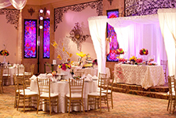
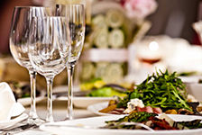
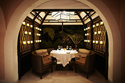

<!doctype html>
<html lang="en">
	<head>
		<meta charset="utf-8">
		<meta http-equiv="x-ua-compatible" content="ie=edge">
		<title>Cafe Santorini</title>
		<meta name="description" content>
		<link rel="stylesheet" href="normalize.css">
		<link rel="stylesheet" href="main.css">
	</head>

	<body>
		<div class="wrapper">
			<header class="header clearfix" id="header">
				<div class="logo">
					<a href="index.html">
                		
                	</a>
           		</div>
		        <div class="nav">
		            <a href="menu.html">Menu</a>
	
		            <a href="rococo-room.html">Rococo Room</a>
		            <a href="gift-cards.html">Gift Cards</a>
		            <a href="contact.html">Contact</a>
        		</div>
        	</header>

		   	<main role="main">
				<div class="container" id="content">

					<div class="row clearfix top-row">
						<div class="headline-img-column">
							<figure>
								
							</figure>
						</div>
					</div><!-- end of top-row -->

				<div class="row clearfix bottom-row">

					<section class="section-column1">
						
					</section><!--end of section 3 -->

					<section class="section-column2">
					<h1>Our Story</h1>
					<p>Specializing in Mediterranean food, Café Santorini opened its doors in June 1993 at a historic brick building in Old Town Pasadena.</p>
					<p>We offer grilled meats, seafood dishes, an array 
					of pastas and family style appetizer platters. The indoor dining room offers a cozy intimate setting, while the outdoor patio offers year-round dining under the stars in a romantic roof-top setting. We have a full bar with an extensive wine list.</p>
					<p>In addition, there is the Rococo Room, a banquet facility that can accomodate up to 150 people. An ideal setting for a corporate function or a personal celebration. Come join us and enjoy our wonderful food and charming ambiance.</p>
					</section><!--end of section 1 -->

					<section class="section-column3">
						<a href="rococo-room.html">
							
							<figcaption> Rococo Room </figcaption>
						</a>
						<a href="gift-cards.html">
							
							<figcaption> Gift Cards </figcaption>
						</a>
						<!-- 
						<figcaption> Gallery </figcaption> -->
					</section><!--end of section 2 -->

				</div>
			</main>
           
			<footer class="footer" id="footer">
                <div class="container-footer">
                    64 West Union Street, Old Pasadena, Ca 91103 | Tel: 626.564.4200
                    2010 Cafe Santorini & Rococo Room, All Rights Reserved | Sitemap
                
	                <section class="container-social-media">
	                	<a href="index.html">
	                		
	                	</a>
	                	<a href="index.html">
	                		
	                	</a>
	                	<a href="index.html">
	                		
	                	</a>
	                	
	                	
	                </section> 

            	</div>
		    </footer>

		</div>
	</body>
</html>
